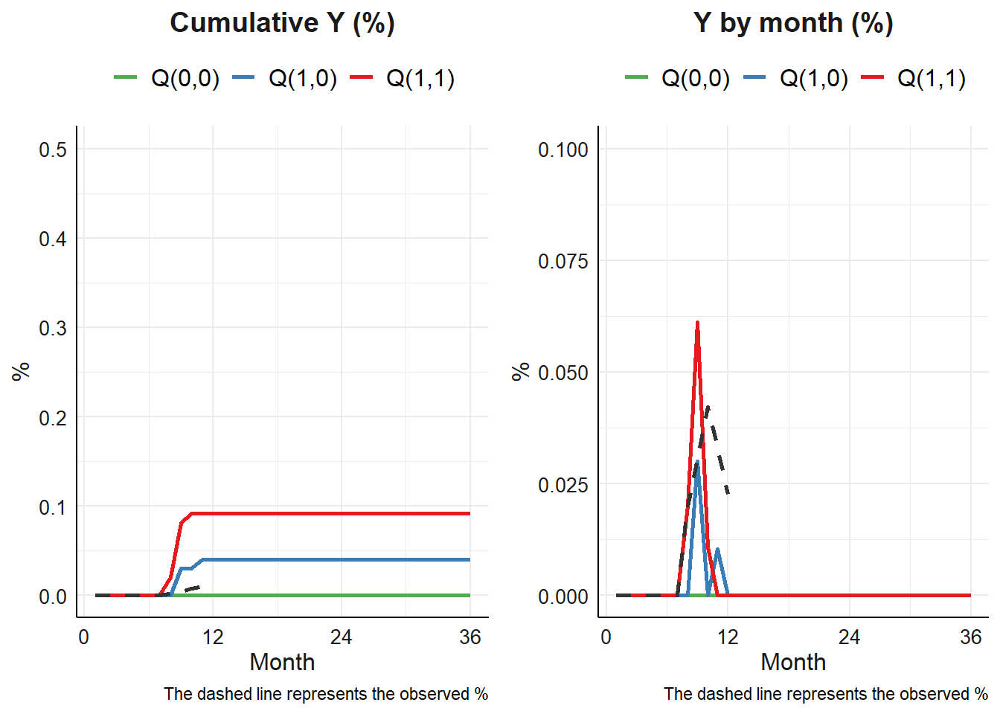
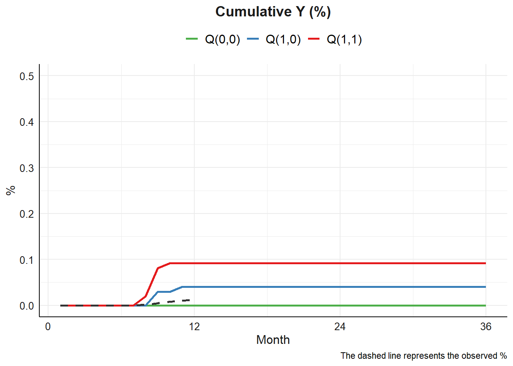
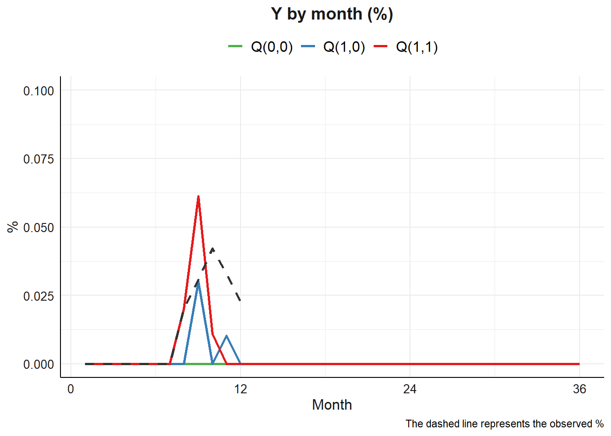

Code
library(tidyverse)
library(magrittr)
library(testthat)
library(splines)library(tidyverse)
library(magrittr)
library(testthat)
library(splines)dat0 <- readRDS("../Data/tvmed_dat100_12mo.RDS")
dat0 %>% as.data.frame() %>% as_tibble()# A tibble: 1,147 × 13
id mm Ap Mp L1 L2 L3 Yp age sex ow risk
<int> <dbl> <dbl> <dbl> <dbl> <dbl> <dbl> <dbl> <dbl> <int> <int> <int>
1 1 1 0 0 0 100 80 0 10.9 1 1 0
2 1 2 0 0 0 131. 88.1 0 10.9 1 1 0
3 1 3 0 0 0 125. 97.6 0 10.9 1 1 0
4 1 4 0 0 0 135. 112. 0 10.9 1 1 0
5 1 5 0 0 0 124. 108. 0 10.9 1 1 0
6 1 6 0 0 0 141. 123. 0 10.9 1 1 0
7 1 7 0 0 0 119. 128. 0 10.9 1 1 0
8 1 8 0 0 0 141. 114. 0 10.9 1 1 0
9 1 9 0 0 0 155. 127. 0 10.9 1 1 0
10 1 10 0 0 0 135. 102. 0 10.9 1 1 0
# ℹ 1,137 more rows
# ℹ 1 more variable: lastid <dbl>process_data <- function(fix,expo,med,tvar,lag,outc,time,norev = NULL,LM = FALSE,data){
## detect which variables are non-reversible
if(length(which(expo %in% norev)) != 0){
norev_expo <- paste0("A",which(expo %in% norev))
} else{
norev_expo <- NULL
}
if(length(which(med %in% norev)) != 0){
norev_med <- paste0("M",which(med %in% norev))
} else {
norev_med <- NULL
}
if(length(which(tvar %in% norev)) != 0){
norev_tvar <- paste0("L",which(tvar %in% norev))
} else {
norev_tvar <- NULL
}
norev_var <- c(norev_expo,norev_med,norev_tvar)
## column names of time-fixed variables
name_v <- paste0("v",1:length(fix))
out <- data.frame(id = data$id) %>%
mutate(data[,fix]) %>%
magrittr::set_colnames(c("id",name_v))
## column names of exposure variables
name_e <- paste0("A",1:length(expo))
## column names of mediator variables
name_me <- paste0("M",1:length(med))
## column names of time-varying variables
name_tvar <- paste0("L",1:length(tvar))
for (i in 1:lag){
## column name of lag effect on exposure variable
co_ex <- paste0(name_e,"l",i)
co_me <- paste0(name_me,"l",i)
co_tvar <- paste0(name_tvar,"l",i)
for (k in 1:length(name_e)){
out[,name_e[k]] <- data[,expo[k]]
name_ep <- {{co_ex}}[k]
out <- out %>%
group_by(id) %>%
mutate(
{{name_ep}} := lag(!!sym(name_e[k]),n=i,default = data[1,expo[k]])
)
}
for (k in 1:length(name_me)){
out[,name_me[k]] <- data[,med[k]]
name_med <- {{co_me}}[k]
out <- out %>%
group_by(id) %>%
mutate(
{{name_med}} := lag(!!sym(name_me[k]),n=i,default = data[1,med[k]])
)
}
for (k in 1:length(name_tvar)){
out[,name_tvar[k]] <- data[,tvar[k]]
name_tv <- {{co_tvar}}[k]
out <- out %>%
group_by(id) %>%
mutate(
{{name_tv}} := lag(!!sym(name_tvar[k]),n=i,default = data[1,tvar[k]])
)
}
}
## outcome variable
out$Y <- data[,outc]
## time variable
out$j <- data[,time]
kq <- list()
kq$df <- out %>% data.frame()
kq$norev_var <- norev_var
## column name
eps <- kq$df %>% select(starts_with("A")) %>% colnames()
tf <- kq$df %>% select(starts_with("v")) %>% colnames()
tva <- kq$df %>% select(starts_with("L")) %>% colnames()
mediator <- kq$df %>% select(starts_with("M")) %>% colnames()
outcome <- kq$df %>% select(starts_with("Y")) %>% colnames()
timee <- kq$df %>% select(starts_with("j")) %>% colnames()
## formula for M(t)
l_tm1 <- tva[!tva %in% name_tvar]
m_tm1 <- mediator[!mediator %in% name_me]
if (LM == FALSE){
formula_mt <- list()
for (i in 1:length(med)){
formula_mt[i] <- paste(name_me[i],"~",paste(c(eps,m_tm1,l_tm1,tf),collapse = " + "))
}
kq$fm <- formula_mt
## formula for L(t)
formular_lt <- list()
for (i in 1:length(tvar)){
formular_lt[i] <- paste(name_tvar[i],"~",paste(c(eps,mediator,l_tm1,tf),collapse = " + "))
}
kq$fl <- formular_lt
## formula for Y(t)
formular_y <- paste(outcome,"~",paste(c(eps,mediator,tva,tf),collapse = " + "))
kq$fy <- formular_y
} else {
formula_mt <- list()
for (i in 1:length(med)){
formula_mt[i] <- paste(name_me[i],"~",paste(c(eps,m_tm1,name_tvar,l_tm1,tf),collapse = " + "))
}
kq$fm <- formula_mt
## formula for L(t)
formular_lt <- list()
for (i in 1:length(tvar)){
formular_lt[i] <- paste(name_tvar[i],"~",paste(c(eps,m_tm1,l_tm1,tf),collapse = " + "))
}
kq$fl <- formular_lt
## formula for Y(t)
formular_y <- paste(outcome,"~",paste(c(eps,tva,mediator,tf),collapse = " + "))
kq$fy <- formular_y
}
return(kq)
}process_data(
fix = c("age","sex","ow","risk"),
expo = c("Ap"),
med = c("Mp"),
tvar = c("L1","L2","L3"),
outc = c("Yp"),
lag = 2,
time = c("mm"),
norev = c("Mp"),
LM = F,
data = dat0
) %>% str()List of 5
$ df :'data.frame': 1147 obs. of 22 variables:
..$ id : int [1:1147] 1 1 1 1 1 1 1 1 1 1 ...
..$ v1 : num [1:1147] 10.9 10.9 10.9 10.9 10.9 ...
..$ v2 : int [1:1147] 1 1 1 1 1 1 1 1 1 1 ...
..$ v3 : int [1:1147] 1 1 1 1 1 1 1 1 1 1 ...
..$ v4 : int [1:1147] 0 0 0 0 0 0 0 0 0 0 ...
..$ A1 : num [1:1147] 0 0 0 0 0 0 0 0 0 0 ...
..$ A1l1: num [1:1147] 0 0 0 0 0 0 0 0 0 0 ...
..$ M1 : num [1:1147] 0 0 0 0 0 0 0 0 0 0 ...
..$ M1l1: num [1:1147] 0 0 0 0 0 0 0 0 0 0 ...
..$ L1 : num [1:1147] 0 0 0 0 0 0 0 0 0 0 ...
..$ L1l1: num [1:1147] 0 0 0 0 0 0 0 0 0 0 ...
..$ L2 : num [1:1147] 100 131 125 135 124 ...
..$ L2l1: num [1:1147] 100 100 131 125 135 ...
..$ L3 : num [1:1147] 80 88.1 97.6 112.2 108.1 ...
..$ L3l1: num [1:1147] 80 80 88.1 97.6 112.2 ...
..$ A1l2: num [1:1147] 0 0 0 0 0 0 0 0 0 0 ...
..$ M1l2: num [1:1147] 0 0 0 0 0 0 0 0 0 0 ...
..$ L1l2: num [1:1147] 0 0 0 0 0 0 0 0 0 0 ...
..$ L2l2: num [1:1147] 100 100 100 131 125 ...
..$ L3l2: num [1:1147] 80 80 80 88.1 97.6 ...
..$ Y : num [1:1147] 0 0 0 0 0 0 0 0 0 0 ...
..$ j : num [1:1147] 1 2 3 4 5 6 7 8 9 10 ...
$ norev_var: chr "M1"
$ fm :List of 1
..$ : chr "M1 ~ A1 + A1l1 + A1l2 + M1l1 + M1l2 + L1l1 + L2l1 + L3l1 + L1l2 + L2l2 + L3l2 + v1 + v2 + v3 + v4"
$ fl :List of 3
..$ : chr "L1 ~ A1 + A1l1 + A1l2 + M1 + M1l1 + M1l2 + L1l1 + L2l1 + L3l1 + L1l2 + L2l2 + L3l2 + v1 + v2 + v3 + v4"
..$ : chr "L2 ~ A1 + A1l1 + A1l2 + M1 + M1l1 + M1l2 + L1l1 + L2l1 + L3l1 + L1l2 + L2l2 + L3l2 + v1 + v2 + v3 + v4"
..$ : chr "L3 ~ A1 + A1l1 + A1l2 + M1 + M1l1 + M1l2 + L1l1 + L2l1 + L3l1 + L1l2 + L2l2 + L3l2 + v1 + v2 + v3 + v4"
$ fy : chr "Y ~ A1 + A1l1 + A1l2 + M1 + M1l1 + M1l2 + L1 + L1l1 + L2 + L2l1 + L3 + L3l1 + L1l2 + L2l2 + L3l2 + v1 + v2 + v3 + v4"ml <- process_data(
fix = c("age","sex","ow","risk"),
expo = c("Ap"),
med = c("Mp"),
tvar = c("L1","L2","L3"),
outc = c("Yp"),
lag = 2,
time = c("mm"),
norev = c("Mp"),
LM = F,
data = dat0
)
lm <- process_data(
fix = c("age","sex","ow","risk"),
expo = c("Ap"),
med = c("Mp"),
tvar = c("L1","L2","L3"),
outc = c("Yp"),
lag = 2,
time = c("mm"),
norev = c("Mp"),
LM = T,
data = dat0
)
ml$fm[[1]]
[1] "M1 ~ A1 + A1l1 + A1l2 + M1l1 + M1l2 + L1l1 + L2l1 + L3l1 + L1l2 + L2l2 + L3l2 + v1 + v2 + v3 + v4"lm$fm[[1]]
[1] "M1 ~ A1 + A1l1 + A1l2 + M1l1 + M1l2 + L1 + L2 + L3 + L1l1 + L2l1 + L3l1 + L1l2 + L2l2 + L3l2 + v1 + v2 + v3 + v4"ml$fl[[1]]
[1] "L1 ~ A1 + A1l1 + A1l2 + M1 + M1l1 + M1l2 + L1l1 + L2l1 + L3l1 + L1l2 + L2l2 + L3l2 + v1 + v2 + v3 + v4"
[[2]]
[1] "L2 ~ A1 + A1l1 + A1l2 + M1 + M1l1 + M1l2 + L1l1 + L2l1 + L3l1 + L1l2 + L2l2 + L3l2 + v1 + v2 + v3 + v4"
[[3]]
[1] "L3 ~ A1 + A1l1 + A1l2 + M1 + M1l1 + M1l2 + L1l1 + L2l1 + L3l1 + L1l2 + L2l2 + L3l2 + v1 + v2 + v3 + v4"lm$fl[[1]]
[1] "L1 ~ A1 + A1l1 + A1l2 + M1l1 + M1l2 + L1l1 + L2l1 + L3l1 + L1l2 + L2l2 + L3l2 + v1 + v2 + v3 + v4"
[[2]]
[1] "L2 ~ A1 + A1l1 + A1l2 + M1l1 + M1l2 + L1l1 + L2l1 + L3l1 + L1l2 + L2l2 + L3l2 + v1 + v2 + v3 + v4"
[[3]]
[1] "L3 ~ A1 + A1l1 + A1l2 + M1l1 + M1l2 + L1l1 + L2l1 + L3l1 + L1l2 + L2l2 + L3l2 + v1 + v2 + v3 + v4"cen_and_scale <- function(time){
j_out <- list()
jj <- time %>%
scale()
j_out[["jj"]] <- jj %>% as.numeric()
j_out[["mean_j"]] <- attributes(jj)$`scaled:center`
j_out[["sd_j"]] <- attributes(jj)$`scaled:scale`
j_out
}resamp <- function(data,boot = FALSE){
df <- data
# set.seed(seed)
# cat("Running SEED", seed, "\n")
# cat("\n")
# cat("Resampling Data", "\n")
clusters <- names(table(df$id))
index <- sample(1:length(clusters), length(clusters), replace = TRUE)
bb <- table(clusters[index])
boot_df <- NULL
if(boot == F) {
# not doing bootstrap
boot_df <- df
} else {
for(zzz in 1:max(bb)) {
# Loop over repeated id
cc <- df[df$id %in% names(bb[bb %in% c(zzz:max(bb))]), ]
cc$bid <- paste0(cc$id, zzz)
boot_df <- rbind(boot_df, cc)
}
}
boot_df$jj <- cen_and_scale(boot_df$j)$jj
boot_df
}fitg <- function(data,boot = FALSE,
mreg = "binomial",
lreg = c("binomial","gaussian","gaussian"),
yreg = "binomial",dof = 3){
res_df <- resamp(data = data$df,boot = boot)
fitR <- list()
fitR$df <- res_df %>% as_tibble()
#----- fit parametric models for
#--- Mediator models
if(length(mreg) != length(data$fm)){
stop("the defined regression of M is not equal")
}
for (i in 1:length(data$fm)){
fitM <- paste0(data$fm[[i]],"+","bs(jj,df=",dof,")")
fitR$M[[i]] <- glm(fitM ,family = mreg[i], data = res_df)
}
#--- Covariate models
if(length(lreg) != length(data$fl)){
stop("the defined regression of L is not equal")
}
for (i in 1:length(data$fl)){
fitL <- paste0(data$fl[[i]],"+","bs(jj,df=",dof,")")
fitR$L[[i]] <- glm(fitL ,family = lreg[i], data = res_df)
}
#--- Outcome model:
fitY <- paste0(data$fy,"+","bs(jj,df=",dof,")")
fitR$Y <- glm(fitY ,family = yreg, data = res_df)
fitR$norev_var <- data$norev_var
fitR
}process_data(
fix = c("age","sex","ow","risk"),
expo = c("Ap"),
med = c("Mp"),
tvar = c("L1","L2","L3"),
outc = c("Yp"),
lag = 2,
time = c("mm"),
norev = NULL,
data = dat0
) %>% fitg(boot=T,
mreg = "binomial",
lreg = c("binomial","gaussian","gaussian"),
yreg = "binomial",dof = 3)$df
# A tibble: 1,166 × 24
id v1 v2 v3 v4 A1 A1l1 M1 M1l1 L1 L1l1 L2 L2l1
<int> <dbl> <int> <int> <int> <dbl> <dbl> <dbl> <dbl> <dbl> <dbl> <dbl> <dbl>
1 1 10.9 1 1 0 0 0 0 0 0 0 100 100
2 1 10.9 1 1 0 0 0 0 0 0 0 131. 100
3 1 10.9 1 1 0 0 0 0 0 0 0 125. 131.
4 1 10.9 1 1 0 0 0 0 0 0 0 135. 125.
5 1 10.9 1 1 0 0 0 0 0 0 0 124. 135.
6 1 10.9 1 1 0 0 0 0 0 0 0 141. 124.
7 1 10.9 1 1 0 0 0 0 0 0 0 119. 141.
8 1 10.9 1 1 0 0 0 0 0 0 0 141. 119.
9 1 10.9 1 1 0 0 0 0 0 0 0 155. 141.
10 1 10.9 1 1 0 0 0 0 0 0 0 135. 155.
# ℹ 1,156 more rows
# ℹ 11 more variables: L3 <dbl>, L3l1 <dbl>, A1l2 <dbl>, M1l2 <dbl>,
# L1l2 <dbl>, L2l2 <dbl>, L3l2 <dbl>, Y <dbl>, j <dbl>, bid <chr>, jj <dbl>
$M
$M[[1]]
Call: glm(formula = fitM, family = mreg[i], data = res_df)
Coefficients:
(Intercept) A1 A1l1 A1l2
-46.605571 -8.240618 -3.746109 14.950727
M1l1 M1l2 L1l1 L2l1
26.550862 -0.401825 NA 0.001142
L3l1 L1l2 L2l2 L3l2
0.115436 NA -0.011544 -0.053097
v1 v2 v3 v4
0.067412 0.988020 1.706146 19.592605
bs(jj, df = 3)1 bs(jj, df = 3)2 bs(jj, df = 3)3
18.119350 18.294358 13.859006
Degrees of Freedom: 1165 Total (i.e. Null); 1149 Residual
Null Deviance: 249.2
Residual Deviance: 47.96 AIC: 81.96
$L
$L[[1]]
Call: glm(formula = fitL, family = lreg[i], data = res_df)
Coefficients:
(Intercept) A1 A1l1 A1l2
-2.657e+01 8.654e-16 4.238e-14 1.070e-14
M1 M1l1 M1l2 L1l1
6.015e-15 2.227e-14 2.067e-15 NA
L2l1 L3l1 L1l2 L2l2
2.806e-16 1.016e-15 NA 1.074e-16
L3l2 v1 v2 v3
7.272e-16 2.129e-15 5.098e-14 5.812e-14
v4 bs(jj, df = 3)1 bs(jj, df = 3)2 bs(jj, df = 3)3
-3.857e-14 -4.188e-13 -1.085e-13 -2.261e-13
Degrees of Freedom: 1165 Total (i.e. Null); 1148 Residual
Null Deviance: 0
Residual Deviance: 6.765e-09 AIC: 36
$L[[2]]
Call: glm(formula = fitL, family = lreg[i], data = res_df)
Coefficients:
(Intercept) A1 A1l1 A1l2
107.760839 0.815732 -5.880931 -4.579582
M1 M1l1 M1l2 L1l1
-4.830700 2.726903 -9.529057 NA
L2l1 L3l1 L1l2 L2l2
0.018073 -0.045839 NA -0.008618
L3l2 v1 v2 v3
0.044424 -0.659744 1.022290 2.549544
v4 bs(jj, df = 3)1 bs(jj, df = 3)2 bs(jj, df = 3)3
-2.253786 55.759150 14.689206 32.480641
Degrees of Freedom: 1165 Total (i.e. Null); 1148 Residual
Null Deviance: 215200
Residual Deviance: 105400 AIC: 8599
$L[[3]]
Call: glm(formula = fitL, family = lreg[i], data = res_df)
Coefficients:
(Intercept) A1 A1l1 A1l2
88.721261 -1.150449 -7.214761 -0.652196
M1 M1l1 M1l2 L1l1
-12.692938 2.267353 3.491466 NA
L2l1 L3l1 L1l2 L2l2
-0.008789 0.002689 NA 0.002382
L3l2 v1 v2 v3
-0.026906 -0.477438 0.768493 0.976814
v4 bs(jj, df = 3)1 bs(jj, df = 3)2 bs(jj, df = 3)3
-0.679003 59.522371 14.930221 31.183817
Degrees of Freedom: 1165 Total (i.e. Null); 1148 Residual
Null Deviance: 164300
Residual Deviance: 67340 AIC: 8077
$Y
Call: glm(formula = fitY, family = yreg, data = res_df)
Coefficients:
(Intercept) A1 A1l1 A1l2
-15.880518 -3.713663 3.535134 25.650089
M1 M1l1 M1l2 L1
5.829919 -2.223575 3.982779 NA
L1l1 L2 L2l1 L3
NA 0.093817 -0.235429 -0.040893
L3l1 L1l2 L2l2 L3l2
0.101894 NA 0.007366 -0.154992
v1 v2 v3 v4
-0.254889 2.003774 0.983017 16.357351
bs(jj, df = 3)1 bs(jj, df = 3)2 bs(jj, df = 3)3
-13.084418 -4.451763 -7.666493
Degrees of Freedom: 1165 Total (i.e. Null); 1146 Residual
Null Deviance: 124.5
Residual Deviance: 29.37 AIC: 69.37baseline_mc <- function(data = fitR2,montecarlo = 10000){
boot <- data$df
# Select baseline visit
df0 <- boot[boot$j==1, ]
df0$idn <- 1:nrow(df0)
MC <- NULL
samples <- sample(df0$idn, size = montecarlo, replace = T)
bb <- table(samples)
for(zzz in 1:max(bb)) {
cc <- df0[df0$idn %in% names(bb[bb %in% c(zzz:max(bb))]), ]
cc$bid <- paste0(cc$idn, zzz)
MC <- rbind(MC, cc)
}
MC$idsim <- 1:montecarlo
data$res_df <- MC %>% as_tibble()
data
}process_data(
fix = c("age","sex","ow","risk"),
expo = c("Ap"),
med = c("Mp"),
tvar = c("L1","L2","L3"),
outc = c("Yp"),
lag = 2,
time = c("mm"),
# norev = c("Mp","L1"),
data = dat0
) %>% fitg(boot=F,
mreg = "binomial",
lreg = c("binomial","gaussian","gaussian"),
yreg = "binomial",dof = 3) %>%
baseline_mc(montecarlo = 10000)$df
# A tibble: 1,147 × 23
id v1 v2 v3 v4 A1 A1l1 M1 M1l1 L1 L1l1 L2 L2l1
<int> <dbl> <int> <int> <int> <dbl> <dbl> <dbl> <dbl> <dbl> <dbl> <dbl> <dbl>
1 1 10.9 1 1 0 0 0 0 0 0 0 100 100
2 1 10.9 1 1 0 0 0 0 0 0 0 131. 100
3 1 10.9 1 1 0 0 0 0 0 0 0 125. 131.
4 1 10.9 1 1 0 0 0 0 0 0 0 135. 125.
5 1 10.9 1 1 0 0 0 0 0 0 0 124. 135.
6 1 10.9 1 1 0 0 0 0 0 0 0 141. 124.
7 1 10.9 1 1 0 0 0 0 0 0 0 119. 141.
8 1 10.9 1 1 0 0 0 0 0 0 0 141. 119.
9 1 10.9 1 1 0 0 0 0 0 0 0 155. 141.
10 1 10.9 1 1 0 0 0 0 0 0 0 135. 155.
# ℹ 1,137 more rows
# ℹ 10 more variables: L3 <dbl>, L3l1 <dbl>, A1l2 <dbl>, M1l2 <dbl>,
# L1l2 <dbl>, L2l2 <dbl>, L3l2 <dbl>, Y <dbl>, j <dbl>, jj <dbl>
$M
$M[[1]]
Call: glm(formula = fitM, family = mreg[i], data = res_df)
Coefficients:
(Intercept) A1 A1l1 A1l2
-42.51754 22.71290 -19.53224 22.01958
M1l1 M1l2 L1l1 L2l1
44.83423 -8.41117 NA -0.02284
L3l1 L1l2 L2l2 L3l2
0.11821 NA -0.04041 0.01394
v1 v2 v3 v4
-0.03064 0.10214 0.59995 18.33849
bs(jj, df = 3)1 bs(jj, df = 3)2 bs(jj, df = 3)3
-26.71343 9.04668 -19.72925
Degrees of Freedom: 1146 Total (i.e. Null); 1130 Residual
Null Deviance: 340.4
Residual Deviance: 72.46 AIC: 106.5
$L
$L[[1]]
Call: glm(formula = fitL, family = lreg[i], data = res_df)
Coefficients:
(Intercept) A1 A1l1 A1l2
-2.657e+01 -1.429e-14 -2.872e-14 -2.406e-14
M1 M1l1 M1l2 L1l1
-2.643e-15 1.183e-15 -3.623e-15 NA
L2l1 L3l1 L1l2 L2l2
-1.620e-16 -6.011e-16 NA -3.151e-16
L3l2 v1 v2 v3
-7.900e-16 -2.106e-15 -2.436e-14 -4.041e-14
v4 bs(jj, df = 3)1 bs(jj, df = 3)2 bs(jj, df = 3)3
5.384e-14 3.738e-13 1.157e-13 2.066e-13
Degrees of Freedom: 1146 Total (i.e. Null); 1129 Residual
Null Deviance: 0
Residual Deviance: 6.654e-09 AIC: 36
$L[[2]]
Call: glm(formula = fitL, family = lreg[i], data = res_df)
Coefficients:
(Intercept) A1 A1l1 A1l2
108.509279 3.283205 -7.238462 -5.557884
M1 M1l1 M1l2 L1l1
-4.523432 -5.266961 -5.002969 NA
L2l1 L3l1 L1l2 L2l2
-0.007107 -0.025578 NA -0.029357
L3l2 v1 v2 v3
0.078398 -0.659217 1.333378 2.159114
v4 bs(jj, df = 3)1 bs(jj, df = 3)2 bs(jj, df = 3)3
-1.870138 54.845225 15.445342 31.858056
Degrees of Freedom: 1146 Total (i.e. Null); 1129 Residual
Null Deviance: 223700
Residual Deviance: 109300 AIC: 8520
$L[[3]]
Call: glm(formula = fitL, family = lreg[i], data = res_df)
Coefficients:
(Intercept) A1 A1l1 A1l2
91.12850 1.78260 -8.79514 -1.76124
M1 M1l1 M1l2 L1l1
-7.61927 -2.29291 0.49595 NA
L2l1 L3l1 L1l2 L2l2
-0.01103 0.02622 NA -0.01983
L3l2 v1 v2 v3
-0.03177 -0.57634 0.67323 1.07818
v4 bs(jj, df = 3)1 bs(jj, df = 3)2 bs(jj, df = 3)3
-1.11441 58.09725 14.33205 32.25556
Degrees of Freedom: 1146 Total (i.e. Null); 1129 Residual
Null Deviance: 167000
Residual Deviance: 68130 AIC: 7978
$Y
Call: glm(formula = fitY, family = yreg, data = res_df)
Coefficients:
(Intercept) A1 A1l1 A1l2
-14.991693 -3.556017 1.078733 21.823471
M1 M1l1 M1l2 L1
2.992454 1.496021 -0.219962 NA
L1l1 L2 L2l1 L3
NA -0.011738 -0.061001 -0.055082
L3l1 L1l2 L2l2 L3l2
-0.031401 NA -0.028394 -0.007122
v1 v2 v3 v4
-0.316078 -0.349683 0.594924 14.202107
bs(jj, df = 3)1 bs(jj, df = 3)2 bs(jj, df = 3)3
1.883026 -1.566936 0.487880
Degrees of Freedom: 1146 Total (i.e. Null); 1127 Residual
Null Deviance: 159.9
Residual Deviance: 47.03 AIC: 87.03
$res_df
# A tibble: 10,000 × 26
id v1 v2 v3 v4 A1 A1l1 M1 M1l1 L1 L1l1 L2
<int> <dbl> <int> <int> <int> <dbl> <dbl> <dbl> <dbl> <dbl> <dbl> <dbl>
1 1 10.9 1 1 0 0 0 0 0 0 0 100
2 2 9.28 0 0 1 0 0 0 0 0 0 100
3 3 7.96 0 1 0 0 0 0 0 0 0 100
4 4 15.7 1 1 0 0 0 0 0 0 0 100
5 5 10.3 0 1 1 0 0 0 0 0 0 100
6 6 11.7 0 0 0 0 0 0 0 0 0 100
7 7 9.73 1 0 0 0 0 0 0 0 0 100
8 8 10.6 0 0 0 0 0 0 0 0 0 100
9 9 0.0440 1 0 1 0 0 0 0 0 0 100
10 10 15.1 1 0 0 0 0 0 0 0 0 100
# ℹ 9,990 more rows
# ℹ 14 more variables: L2l1 <dbl>, L3 <dbl>, L3l1 <dbl>, A1l2 <dbl>,
# M1l2 <dbl>, L1l2 <dbl>, L2l2 <dbl>, L3l2 <dbl>, Y <dbl>, j <dbl>, jj <dbl>,
# idn <int>, bid <chr>, idsim <int>pFunc <- function(mod, ndat) {
as.numeric(predict(mod, newdata = ndat, type = "response") > runif(1))
}
rFunc <- function(mod, ndat) {
pred_prob <- predict(mod, newdata = ndat, type = "response")
return(rbinom(1, size = 1, prob = pred_prob))
}g_form <- function(data, ii = 2, length = 12, am = 1, ay = 0){
norev_var <- data$norev_var
dddd <- data$res_df %>% data.frame()
lagg <- dddd %>% dplyr::select(contains("L1l")) %>% ncol()
d2 <- dddd[dddd$idsim==ii, ]
id <- d2$idsim
id_ori <- d2$id
length <- length
# Baseline covariates
Vp <- d2 %>% select(starts_with("v"))
Yp2 <- mm <- numeric()
mm[1:lagg-1] <- j <- 1
Yp2[1:lagg-1] <- 0
timee <- cen_and_scale(data$df$j)
# mediator
Mp <- matrix(ncol = length(data$M)) %>% data.frame()
names(Mp) <- paste0("M",1:length(data$M))
Mp[1:lagg-1,] <- d2 %>% select(names(Mp))
# time-varying covariates (contribute to mediator models)
Lmp <- matrix(ncol = length(data$L)) %>% data.frame()
names(Lmp) <- paste0("L",1:length(data$L))
Lmp[1:lagg-1,] <- d2 %>% select(names(Lmp))
# time-varying covariates (contribute to outcome models)
Lp <- Lmp
for (l in lagg:length) {
if (Yp2[l-1]==1) {
break
} else{
# Predict mediator
var_fm <- attr(data$M[[1]]$terms, "term.labels")
var_fm <- var_fm[-length(var_fm)]
dfMp <- d2 %>% select(matches(var_fm)) %>%
mutate(jj = (l-timee$mean_j)/timee$sd_j)
dfMp[startsWith(colnames(dfMp), "A")] <- am
if (l > lagg){
for (zz in 1:(lagg)){
term <- paste0("l",zz)
# L lag
dfMp[startsWith(colnames(dfMp), "L") & endsWith(colnames(dfMp), term)] <- Lmp[l-zz,]
# M lag
dfMp[startsWith(colnames(dfMp), "M") & endsWith(colnames(dfMp), term)] <- Mp[l-zz,]
}
}
for (x in 1:length(data$M)){
M_reg <- data$M[[x]]$family$family
if (names(Mp[x]) %in% norev_var){
if (M_reg == "binomial" & Mp[l-1,x] == 1) {
Mp[l,x] <- 1
} else {
Mp[l,x] <- case_when(
M_reg == "binomial" ~ rFunc(data$M[[x]], dfMp),
M_reg == "gaussian" ~ predict(data$M[[x]], dfMp)
)
}
} else {
Mp[l,x] <- case_when(
M_reg == "binomial" ~ rFunc(data$M[[x]], dfMp),
M_reg == "gaussian" ~ predict(data$M[[x]], dfMp)
)
}
}
# Predict time-varying covariates (contribute to mediator models)
# L
var_fl <- attr(data$L[[1]]$terms, "term.labels")
var_fl <- var_fl[-length(var_fl)]
dfLmp <- d2 %>% select(matches(var_fl)) %>%
mutate(jj = (l-timee$mean_j)/timee$sd_j)
dfLmp[startsWith(colnames(dfLmp), "A")] <- am
dfLmp[colnames(dfLmp) == colnames(Mp)] <- Mp[l,]
if (l > lagg){
for (zz in 1:lagg){
term <- paste0("l",zz)
# L lag
dfLmp[startsWith(colnames(dfLmp), "L") & endsWith(colnames(dfLmp), term)] <- Lmp[l-zz,]
# M lag
dfLmp[startsWith(colnames(dfLmp), "M") & endsWith(colnames(dfLmp), term)] <- Mp[l-zz,]
}
}
for (x in 1:length(data$L)){
L_reg <- data$L[[x]]$family$family
if (names(Lmp[x]) %in% norev_var){
if (L_reg == "binomial" & Lmp[l-1,x] == 1){
Lmp[l,x] <- 1
} else {
Lmp[l,x] <- case_when(
L_reg == "binomial" ~ pFunc(data$L[[x]], dfLmp),
L_reg == "gaussian" ~ predict(data$L[[x]], dfLmp)
)
}
} else{
Lmp[l,x] <- case_when(
L_reg == "binomial" ~ pFunc(data$L[[x]], dfLmp),
L_reg == "gaussian" ~ predict(data$L[[x]], dfLmp)
)
}
}
# Predict time-varying covariates (contribute to outcome models, if ay != am)
if (ay != am) {
dfLp <- d2 %>% select(matches(var_fl)) %>%
mutate(jj = (l-timee$mean_j)/timee$sd_j)
dfLp[startsWith(colnames(dfLp), "A")] <- ay
dfLp[colnames(dfLp) == colnames(Mp)] <- Mp[l,]
if (l > lagg){
for (zz in 1:lagg){
term <- paste0("l",zz)
# L lag
dfLp[startsWith(colnames(dfLp), "L") & endsWith(colnames(dfLp), term)] <- Lp[l-zz,]
# M lag
dfLp[startsWith(colnames(dfLp), "M") & endsWith(colnames(dfLp), term)] <- Mp[l-zz,]
}
}
for (x in 1:length(data$L)){
L_reg <- data$L[[x]]$family$family
if (names(Lp[x]) %in% norev_var){
if (L_reg == "binomial" & Lp[l-1,x] == 1){
Lp[l,x] <- 1
} else {
Lp[l,x] <- case_when(
L_reg == "binomial" ~ pFunc(data$L[[x]], dfLp),
L_reg == "gaussian" ~ predict(data$L[[x]], dfLp)
)
}
} else {
Lp[l,x] <- case_when(
L_reg == "binomial" ~ pFunc(data$L[[x]], dfLp),
L_reg == "gaussian" ~ predict(data$L[[x]], dfLp)
)
}
}
} else{
Lp <- Lmp
}
# Y
var_y <- attr(data$Y$terms, "term.labels")
var_y <- var_y[-length(var_y)]
dfYp <- d2 %>% select(matches(var_y)) %>%
mutate(jj = (l-timee$mean_j)/timee$sd_j)
dfYp[startsWith(colnames(dfYp), "A")] <- ay
dfYp[colnames(dfYp) %in% colnames(Mp)] <- Mp[l,]
dfYp[colnames(dfYp) %in% colnames(Lp)] <- Lp[l,]
if (l > lagg){
for (zz in 1:lagg){
term <- paste0("l",zz)
# L lag
dfYp[startsWith(colnames(dfYp), "L") & endsWith(colnames(dfYp), term)] <- Lp[l-zz,]
# M lag
dfYp[startsWith(colnames(dfYp), "M") & endsWith(colnames(dfYp), term)] <- Mp[l-zz,]
}
}
Yp2[l] <- pFunc(data$Y, dfYp)
}
mm[l] <- l
}
colnames(Lmp) <- paste0("Lmp",1:length(data$L))
colnames(Lp) <- paste0("Lp",1:length(data$L))
# boot_num <- seed
gdat2 <- data.frame(id, id_ori, mm, Ay = ay, Am = am, Mp, Yp2,
Lmp, Lp, Vp)
gdat2$lastid <- as.numeric(!duplicated(gdat2$id, fromLast = T))
return(gdat2)
}process_data(
fix = c("age","sex","ow","risk"),
expo = c("Ap"),
med = c("Mp"),
tvar = c("L1","L2","L3"),
outc = c("Yp"),
lag = 2,
time = c("mm"),
data = dat0
) %>% fitg(boot=F,
mreg = "binomial",
lreg = c("binomial","gaussian","gaussian"),
yreg = "binomial",dof = 3) %>%
baseline_mc(montecarlo = 10000) %>%
g_form(ii = 2, length = 12, am = 1, ay = 0) id id_ori mm Ay Am M1 Yp2 Lmp1 Lmp2 Lmp3 Lp1 Lp2 Lp3
1 2 2 1 0 1 0 0 0 100.0000 80.00000 0 100.0000 80.00000
2 2 2 2 0 1 0 0 0 104.3224 85.80513 0 113.8355 94.57890
3 2 2 3 0 1 0 0 0 112.8802 95.03798 0 122.1013 103.93689
4 2 2 4 0 1 0 0 0 118.3280 100.46738 0 127.9566 108.90544
5 2 2 5 0 1 0 0 0 121.3956 102.79926 0 131.0515 111.22255
6 2 2 6 0 1 0 0 0 122.3850 103.15671 0 131.9929 111.58588
7 2 2 7 0 1 0 0 0 121.9755 102.26624 0 131.5817 110.69602
8 2 2 8 0 1 0 0 0 120.8995 100.83500 0 130.5075 109.26557
9 2 2 9 0 1 1 0 0 115.3237 91.95490 0 124.9318 100.38549
10 2 2 10 0 1 1 0 0 109.9422 89.13300 0 119.5503 97.56353
11 2 2 11 0 1 1 0 0 105.6312 91.16695 0 115.2393 99.59747
12 2 2 12 0 1 1 0 0 108.7517 94.94583 0 118.3598 103.37636
v1 v2 v3 v4 lastid
1 9.278753 0 0 1 0
2 9.278753 0 0 1 0
3 9.278753 0 0 1 0
4 9.278753 0 0 1 0
5 9.278753 0 0 1 0
6 9.278753 0 0 1 0
7 9.278753 0 0 1 0
8 9.278753 0 0 1 0
9 9.278753 0 0 1 0
10 9.278753 0 0 1 0
11 9.278753 0 0 1 0
12 9.278753 0 0 1 1process_data(
fix = c("age","sex","ow","risk"),
expo = c("Ap"),
med = c("Mp"),
tvar = c("L1","L2","L3"),
outc = c("Yp"),
lag = 2,
norev = c("Mp"),
time = c("mm"),
data = dat0
) %>% fitg(boot=T,
mreg = "binomial",
lreg = c("binomial","gaussian","gaussian"),
yreg = "binomial",dof = 3) %>%
baseline_mc(montecarlo = 10000) %>%
g_form(ii = 2, length = 12, am = 1, ay = 0) id id_ori mm Ay Am M1 Yp2 Lmp1 Lmp2 Lmp3 Lp1 Lp2 Lp3
1 2 3 1 0 1 0 0 0 100.0000 80.00000 0 100.0000 80.00000
2 2 3 2 0 1 0 0 0 108.8893 89.69960 0 118.0027 96.94822
3 2 3 3 0 1 0 0 0 117.8074 98.63188 0 127.3364 105.86310
4 2 3 4 0 1 0 0 0 123.6452 104.01835 0 133.2842 111.55997
5 2 3 5 0 1 0 0 0 126.5805 106.39428 0 136.2098 113.94201
6 2 3 6 0 1 0 0 0 127.2886 106.50855 0 136.9374 114.06247
7 2 3 7 0 1 0 0 0 126.5552 105.23061 0 136.2055 112.78448
8 2 3 8 0 1 0 0 0 125.1632 103.44372 0 134.8131 110.99814
9 2 3 9 0 1 0 0 0 123.9001 102.03498 0 133.5499 109.58943
10 2 3 10 0 1 0 0 0 123.5547 101.89160 0 133.2046 109.44604
11 2 3 11 0 1 0 0 0 124.9161 103.90093 0 134.5659 111.45536
12 2 3 12 0 1 0 0 0 128.7731 108.95037 0 138.4229 116.50481
v1 v2 v3 v4 lastid
1 7.955373 0 1 0 0
2 7.955373 0 1 0 0
3 7.955373 0 1 0 0
4 7.955373 0 1 0 0
5 7.955373 0 1 0 0
6 7.955373 0 1 0 0
7 7.955373 0 1 0 0
8 7.955373 0 1 0 0
9 7.955373 0 1 0 0
10 7.955373 0 1 0 0
11 7.955373 0 1 0 0
12 7.955373 0 1 0 1process_data(
fix = c("age","sex","ow","risk"),
expo = c("Ap"),
med = c("Mp"),
tvar = c("L1","L2","L3"),
outc = c("Yp"),
lag = 2,
norev = c("Mp"),
LM = TRUE,
time = c("mm"),
data = dat0
) %>% fitg(boot=T,
mreg = "binomial",
lreg = c("binomial","gaussian","gaussian"),
yreg = "binomial",dof = 3) %>%
baseline_mc(montecarlo = 10000) %>%
g_form(ii = 44, length = 12, am = 1, ay = 0) id id_ori mm Ay Am M1 Yp2 Lmp1 Lmp2 Lmp3 Lp1 Lp2 Lp3
1 44 72 1 0 1 0 0 0 100.0000 80.00000 0 100.0000 80.0000
2 44 72 2 0 1 0 0 0 114.8190 96.24901 0 122.7700 103.6660
3 44 72 3 0 1 0 0 0 122.4599 105.35249 0 130.4457 112.9890
4 44 72 4 0 1 0 0 0 129.2301 109.99726 0 138.2090 117.2212
5 44 72 5 0 1 0 0 0 132.5706 112.24833 0 141.5136 119.4459
6 44 72 6 0 1 0 0 0 133.7189 112.69214 0 142.6457 119.9019
7 44 72 7 0 1 0 0 0 133.3864 111.95445 0 142.3108 119.1661
8 44 72 8 0 1 0 0 0 132.2559 110.70796 0 141.1813 117.9192
9 44 72 9 0 1 0 0 0 131.0034 109.62881 0 139.9289 116.8400
10 44 72 10 0 1 0 0 0 130.3097 109.39121 0 139.2352 116.6024
11 44 72 11 0 1 0 0 0 130.8551 110.66916 0 139.7806 117.8804
12 44 72 12 0 1 0 0 0 133.3203 114.13671 0 142.2458 121.3479
v1 v2 v3 v4 lastid
1 0.1868591 0 1 0 0
2 0.1868591 0 1 0 0
3 0.1868591 0 1 0 0
4 0.1868591 0 1 0 0
5 0.1868591 0 1 0 0
6 0.1868591 0 1 0 0
7 0.1868591 0 1 0 0
8 0.1868591 0 1 0 0
9 0.1868591 0 1 0 0
10 0.1868591 0 1 0 0
11 0.1868591 0 1 0 0
12 0.1868591 0 1 0 1df_prep <- function(data) {
df <- data.frame(id = data$id)
# Baseline characteristics
df$v1 <- data$age
df$v2 <- data$sex
df$v3 <- data$ow
df$v4 <- data$risk
# Time-varying treatment
df$A <- data$Ap
df$Al1 <- data$A_lag1
df$Al2 <- data$A_lag2
# time-dependent covariate
df$T1 <- data$L1
df$T1l1 <- data$L1_lag1
df$T1l2 <- data$L1_lag2
df$T2 <- data$L2
df$T2l1 <- data$L2_lag1
df$T2l2 <- data$L2_lag2
df$T3 <- data$L3
df$T3l1 <- data$L3_lag1
df$T3l2 <- data$L3_lag2
# Mediator
df$M1 <- data$Mp
df$M1l1 <- data$M_lag1
df$M1l2 <- data$M_lag2
# outcomes
df$Y <- data$Yp
# Time
df$j <- data$mm
return(df)
}gform <- function(ii, pgdat, length, am, ay) {
pFunc <- function(mod, ndat) {
as.numeric(predict(mod, newdata = ndat, type = "response") > runif(1))
}
rFunc <- function(mod, ndat) {
pred_prob <- predict(mod, newdata = ndat, type = "response")
return(rbinom(1, size = 1, prob = pred_prob))
}
d <- pgdat
d <- d[d$idsim==ii, ]
id <- d$idsim
id_ori <- d$id
length <- length
# cat("...", paste0(ii, "(", id_ori, ")"))
# Baseline covariates
Vp <- d[, c("v1", "v2", "v3", "v4")]
T1p <- T2p <- T3p <- M1p <- Yp <- mm <- numeric()
T1mp <- T2mp <- T3mp <- numeric()
mm[1] <- j <- 1
M1p[1] <- 0
Yp[1] <- 0
# Time-varying covariates contribute to outcome model
T1p[1] <- d$T1
T2p[1] <- d$T2
T3p[1] <- d$T3
# Time-varying covariates contribute to mediator model
T1mp[1] <- d$T1
T2mp[1] <- d$T2
T3mp[1] <- d$T3
for (l in 2:length) {
if (Yp[l-1]==0) {
if (l == 2) {
T1l2 <- T1p[1]
T2l2 <- T2p[1]
T3l2 <- T3p[1]
T1ml2 <- T1mp[1]
T2ml2 <- T2mp[1]
T3ml2 <- T3mp[1]
M1l2 <- M1p[1]
} else {
T1l2 <- T1p[l-2]
T2l2 <- T2p[l-2]
T3l2 <- T3p[l-2]
T1ml2 <- T1mp[l-2]
T2ml2 <- T2mp[l-2]
T3ml2 <- T3mp[l-2]
M1l2 <- M1p[l-2]
}
T1l1 <- T1p[l-1]
T2l1 <- T2p[l-1]
T3l1 <- T3p[l-1]
T1ml1 <- T1mp[l-1]
T2ml1 <- T2mp[l-1]
T3ml1 <- T3mp[l-1]
M1l1 <- M1p[l-1]
# Predict mediator
dM1p <- data.frame(Vp, A = am, Al1 = am, Al2 = am, M1l1, M1l2, T1l1 = T1ml1, T1l2 = T1ml2,
T2l1 = T2ml1, T2l2 = T2ml2, T3l1 = T3ml1, T3l2 = T3ml2,
jj = as.numeric((l-mean_j)/sd_j))
if (M1p[l - 1] == 0) {
# M1p[l] <- pFunc(fitR[[1]], dM1p)
M1p[l] <- rFunc(fitR[[1]], dM1p)
} else {
M1p[l] <- 1
}
# Predict time-varying covariates (contribute to mediator models)
# T1
dT1mp <- data.frame(Vp, A = am, Al1 = am, Al2 = am,
M1 = M1p[l], M1l1, M1l2,
T1l1 = T1ml1, T1l2 = T1ml2,
T2l1 = T2ml1, T2l2 = T2ml2,
T3l1 = T3ml1,T3l2 = T3ml2,
jj = as.numeric((l-mean_j)/sd_j))
T1mp[l] <- pFunc(fitR[[3]], dT1mp)
# T2
dT2mp <- data.frame(Vp, A = am, Al1 = am, Al2 = am,
M1 = M1p[l], M1l1, M1l2,
T1l1 = T1ml1, T1l2 = T1ml2,
T2l1 = T2ml1, T2l2 = T2ml2,
T3l1 = T3ml1, T3l2 = T3ml2,
jj = as.numeric((l-mean_j)/sd_j))
T2mp[l] <- predict(fitR[[4]], dT2mp)
# T3
dT3mp <- data.frame(Vp, A = am, Al1 = am, Al2 = am,
M1 = M1p[l], M1l1, M1l2,
T1l1 = T1ml1, T1l2 = T1ml2,
T2l1 = T2ml1, T2l2 = T2ml2,
T3l1 = T3ml1, T3l2 = T3ml2,
jj = as.numeric((l-mean_j)/sd_j))
T3mp[l] <- predict(fitR[[5]], dT3mp)
# Predict time-varying covariates (contribute to outcome models, if ay != am)
# If ay = am ==> simply covariates take the same values between two models
if (ay != am) {
# T1
dT1p <- data.frame(Vp, A = ay, Al1 = ay, Al2 = ay,
M1 = M1p[l], M1l1, M1l2,
T1l1, T1l2,
T2l1, T2l2,
T3l1, T3l2,
jj = as.numeric((l-mean_j)/sd_j))
T1p[l] <- pFunc(fitR[[3]], dT1p)
# T2
dT2p <- data.frame(Vp, A = ay, Al1 = ay, Al2 = ay,
M1 = M1p[l], M1l1, M1l2,
T1l1, T1l2,
T2l1, T2l2,
T3l1, T3l2,
jj = as.numeric((l-mean_j)/sd_j))
T2p[l] <- predict(fitR[[4]], dT2p)
# T3
dT3p <- data.frame(Vp, A = ay, Al1 = ay, Al2 = ay,
M1 = M1p[l], M1l1, M1l2,
T1l1, T1l2,
T2l1, T2l2,
T3l1, T3l2,
jj = as.numeric((l-mean_j)/sd_j))
T3p[l] <- predict(fitR[[5]], dT3p)
} else {
T1p[l] <- T1mp[l]
T2p[l] <- T2mp[l]
T3p[l] <- T3mp[l]
}
# Y
dYp <- data.frame(Vp, A = ay, Al1 = ay, Al2 = ay, M1 = M1p[l], M1l1, M1l2,
T1 = T1p[l], T1l1, T1l2,
T2 = T2p[l], T2l1, T2l2,
T3 = T3p[l], T3l1, T3l2,
jj = as.numeric((l-mean_j)/sd_j))
Yp[l] <- pFunc(fitR[[2]], dYp)
} else {
break
}
mm[l] <- l
}
boot_num <- seed
gdat <- data.frame(boot_num, id, id_ori, mm, Ay = ay, Am = am, M1p, Yp,
T1mp, T1p, T2mp, T2p, T3mp, T3p, Vp)
gdat$lastid <- as.numeric(!duplicated(gdat$id, fromLast = T))
return(gdat)
}dat <- dat0 |>
group_by(id) |>
mutate(
A_lag1 = lag(Ap, n = 1, default = 0),
A_lag2 = lag(Ap, n = 2, default = 0),
M_lag1 = lag(Mp, n = 1, default = 0),
M_lag2 = lag(Mp, n = 2, default = 0),
L1_lag1 = lag(L1, n = 1, default = 0),
L1_lag2 = lag(L1, n = 2, default = 0),
L2_lag1 = lag(L2, n = 1, default = 100),
L2_lag2 = lag(L2, n = 2, default = 100),
L3_lag1 = lag(L3, n = 1, default = 80),
L3_lag2 = lag(L3, n = 2, default = 80)
) |> ungroup() %>% df_prep()
dat %>% head() id v1 v2 v3 v4 A Al1 Al2 T1 T1l1 T1l2 T2 T2l1 T2l2
1 1 10.92764 1 1 0 0 0 0 0 0 0 100.0000 100.0000 100.0000
2 1 10.92764 1 1 0 0 0 0 0 0 0 130.6644 100.0000 100.0000
3 1 10.92764 1 1 0 0 0 0 0 0 0 125.2740 130.6644 100.0000
4 1 10.92764 1 1 0 0 0 0 0 0 0 135.2596 125.2740 130.6644
5 1 10.92764 1 1 0 0 0 0 0 0 0 124.3786 135.2596 125.2740
6 1 10.92764 1 1 0 0 0 0 0 0 0 141.4882 124.3786 135.2596
T3 T3l1 T3l2 M1 M1l1 M1l2 Y j
1 80.00000 80.00000 80.00000 0 0 0 0 1
2 88.06184 80.00000 80.00000 0 0 0 0 2
3 97.63087 88.06184 80.00000 0 0 0 0 3
4 112.20273 97.63087 88.06184 0 0 0 0 4
5 108.05454 112.20273 97.63087 0 0 0 0 5
6 123.36927 108.05454 112.20273 0 0 0 0 6data_pro <- process_data(
fix = c("age","sex","ow","risk"),
expo = c("Ap"),
med = c("Mp"),
tvar = c("L1","L2","L3"),
outc = c("Yp"),
lag = 2,
time = c("mm"),
data = dat0
)
data_pro$df %>% head() id v1 v2 v3 v4 A1 A1l1 M1 M1l1 L1 L1l1 L2 L2l1 L3
1 1 10.92764 1 1 0 0 0 0 0 0 0 100.0000 100.0000 80.00000
2 1 10.92764 1 1 0 0 0 0 0 0 0 130.6644 100.0000 88.06184
3 1 10.92764 1 1 0 0 0 0 0 0 0 125.2740 130.6644 97.63087
4 1 10.92764 1 1 0 0 0 0 0 0 0 135.2596 125.2740 112.20273
5 1 10.92764 1 1 0 0 0 0 0 0 0 124.3786 135.2596 108.05454
6 1 10.92764 1 1 0 0 0 0 0 0 0 141.4882 124.3786 123.36927
L3l1 A1l2 M1l2 L1l2 L2l2 L3l2 Y j
1 80.00000 0 0 0 100.0000 80.00000 0 1
2 80.00000 0 0 0 100.0000 80.00000 0 2
3 88.06184 0 0 0 100.0000 80.00000 0 3
4 97.63087 0 0 0 130.6644 88.06184 0 4
5 112.20273 0 0 0 125.2740 97.63087 0 5
6 108.05454 0 0 0 135.2596 112.20273 0 6test_that("process_data function", {
## id, v1 - v4
expect_equal(dat[,c(1:5)],data_pro$df[,c(1:5)])
## exposure variables
expect_equal(dat[,c("A")],data_pro$df[,c("A1")])
expect_equal(dat[,c("Al1")],data_pro$df[,c("A1l1")])
expect_equal(dat[,c("Al2")],data_pro$df[,c("A1l2")])
## time-dependent covariate
expect_equal(dat[,c("T1")],data_pro$df[,c("L1")])
expect_equal(dat[,c("T2")],data_pro$df[,c("L2")])
expect_equal(dat[,c("T3")],data_pro$df[,c("L3")])
## time-dependent covariate + lag
expect_equal(dat[,c("T1l1")],data_pro$df[,c("L1l1")])
expect_equal(dat[,c("T2l1")],data_pro$df[,c("L2l1")])
expect_equal(dat[,c("T3l1")],data_pro$df[,c("L3l1")])
expect_equal(dat[,c("T1l2")],data_pro$df[,c("L1l2")])
expect_equal(dat[,c("T2l2")],data_pro$df[,c("L2l2")])
expect_equal(dat[,c("T3l2")],data_pro$df[,c("L3l2")])
## Mediator
expect_equal(dat[,c("M1")],data_pro$df[,c("M1")])
expect_equal(dat[,c("M1l1")],data_pro$df[,c("M1l1")])
expect_equal(dat[,c("M1l2")],data_pro$df[,c("M1l2")])
## outcome and time
expect_equal(dat[,c("Y","j")],data_pro$df[,c("Y","j")])
})Test passed 🎊df <- dat0 |>
group_by(id) |>
mutate(
A_lag1 = lag(Ap, n = 1, default = 0),
A_lag2 = lag(Ap, n = 2, default = 0),
M_lag1 = lag(Mp, n = 1, default = 0),
M_lag2 = lag(Mp, n = 2, default = 0),
L1_lag1 = lag(L1, n = 1, default = 0),
L1_lag2 = lag(L1, n = 2, default = 0),
L2_lag1 = lag(L2, n = 1, default = 100),
L2_lag2 = lag(L2, n = 2, default = 100),
L3_lag1 = lag(L3, n = 1, default = 80),
L3_lag2 = lag(L3, n = 2, default = 80)
) |> ungroup() %>% df_prep()
boot <- df
boot$jj <- scale(boot$j)
mean_j <- attributes(boot$jj)$`scaled:center`
sd_j <- attributes(boot$jj)$`scaled:scale`
boot$jj <- as.numeric(boot$jj)
#----- fit parametric models for
#--- Mediator models
mM1 <- function(k){
fitM1 <- glm(M1 ~ A + Al1 + Al2 + M1l1 + M1l2 + T1l1 + T1l2 + T2l1 + T2l2 + T3l1 + T3l2 +
v1 + v2 + v3 + v4 + splines::bs(jj, df = 3),
family = binomial, data = boot)
return(fitM1)
}
# PseudoR2(fitM1)
#--- Covariate models
mT1 <- function(k){
fitT1 <- glm(T1 ~ A + Al1 + Al2 + M1 + M1l1 + M1l2 + T1l1 + T1l2 + T2l1 + T2l2 + T3l1 + T3l2 +
v1 + v2 + v3 + v4 + splines::bs(jj, df = 3),
family = binomial, data = boot)
return(fitT1)
}
# PseudoR2(fitT1)
mT2 <- function(k){
fitT2 <- lm(T2 ~ A + Al1 + Al2 + M1 + M1l1 + M1l2 + T1l1 + T1l2 + T2l1 + T2l2 + T3l1 + T3l2 +
v1 + v2 + v3 + v4 + splines::bs(jj, df = 3), data = boot)
return(fitT2)
}
mT3 <- function(k){
fitT3 <- lm(T3 ~ A + Al1 + Al2 + M1 + M1l1 + M1l2 + T1l1 + T1l2 + T2l1 + T2l2 + T3l1 + T3l2 +
v1 + v2 + v3 + v4 + splines::bs(jj, df = 3), data = boot)
return(fitT3)
}
# Outcome model: E(Y|a, m, l, v)
mY <- function(k) {
fitY <- glm(Y ~ A + Al1 + Al2 + M1 + M1l1 + M1l2 + T1 + T1l1 + T1l2 + T2 + T2l1 + T2l2 +
T3 + T3l1 + T3l2 + v1 + v2 + v3 + v4 + splines::bs(jj, df = 3),
family = binomial, data = boot)
return(fitY)
}
# PseudoR2(fitY)
# Fit all models and save in a list
mR <- c(mM1, mY, mT1, mT2, mT3)
fitR <- lapply(1:5,function(x) mR[[x]](k))fitR2 <- process_data(
fix = c("age","sex","ow","risk"),
expo = c("Ap"),
med = c("Mp"),
tvar = c("L1","L2","L3"),
outc = c("Yp"),
lag = 2,
time = c("mm"),
data = dat0
) %>% fitg(boot=F,
mreg = "binomial",
lreg = c("binomial","gaussian","gaussian"),
yreg = "binomial",dof = 3) test_that("fitg function", {
## model M(t)
expect_equal(min(fitR[[1]]$fitted.values),min(fitR2$M[[1]]$fitted.values))
expect_equal(max(fitR[[1]]$fitted.values),max(fitR2$M[[1]]$fitted.values))
expect_equal(mean(fitR[[1]]$fitted.values),mean(fitR2$M[[1]]$fitted.values))
expect_equal(sd(fitR[[1]]$fitted.values),sd(fitR2$M[[1]]$fitted.values))
## model Y
expect_equal(min(fitR[[2]]$fitted.values),min(fitR2$Y$fitted.values))
expect_equal(max(fitR[[2]]$fitted.values),max(fitR2$Y$fitted.values))
expect_equal(mean(fitR[[2]]$fitted.values),mean(fitR2$Y$fitted.values))
expect_equal(sd(fitR[[2]]$fitted.values),sd(fitR2$Y$fitted.values))
## model L1
expect_equal(min(fitR[[3]]$fitted.values),min(fitR2$L[[1]]$fitted.values))
expect_equal(max(fitR[[3]]$fitted.values),max(fitR2$L[[1]]$fitted.values))
expect_equal(mean(fitR[[3]]$fitted.values),mean(fitR2$L[[1]]$fitted.values))
expect_equal(sd(fitR[[3]]$fitted.values),sd(fitR2$L[[1]]$fitted.values))
## model L2
expect_equal(min(fitR[[4]]$fitted.values),min(fitR2$L[[2]]$fitted.values))
expect_equal(max(fitR[[4]]$fitted.values),max(fitR2$L[[2]]$fitted.values))
expect_equal(mean(fitR[[4]]$fitted.values),mean(fitR2$L[[2]]$fitted.values))
expect_equal(sd(fitR[[4]]$fitted.values),sd(fitR2$L[[2]]$fitted.values))
## model L3
expect_equal(min(fitR[[5]]$fitted.values),min(fitR2$L[[3]]$fitted.values))
expect_equal(max(fitR[[5]]$fitted.values),max(fitR2$L[[3]]$fitted.values))
expect_equal(mean(fitR[[5]]$fitted.values),mean(fitR2$L[[3]]$fitted.values))
expect_equal(sd(fitR[[5]]$fitted.values),sd(fitR2$L[[3]]$fitted.values))
})Test passed 😀## seed = 123
df <- dat0 |>
group_by(id) |>
mutate(
A_lag1 = lag(Ap, n = 1, default = 0),
A_lag2 = lag(Ap, n = 2, default = 0),
M_lag1 = lag(Mp, n = 1, default = 0),
M_lag2 = lag(Mp, n = 2, default = 0),
L1_lag1 = lag(L1, n = 1, default = 0),
L1_lag2 = lag(L1, n = 2, default = 0),
L2_lag1 = lag(L2, n = 1, default = 100),
L2_lag2 = lag(L2, n = 2, default = 100),
L3_lag1 = lag(L3, n = 1, default = 80),
L3_lag2 = lag(L3, n = 2, default = 80)
) |> ungroup() %>% df_prep()
set.seed(123)
clusters <- names(table(df$id))
index <- sample(1:length(clusters), length(clusters), replace = TRUE)
bb <- table(clusters[index])
boot <- NULL
for(zzz in 1:max(bb)) {
# Loop over repeated id
cc <- df[df$id %in% names(bb[bb %in% c(zzz:max(bb))]), ]
cc$bid <- paste0(cc$id, zzz)
boot <- rbind(boot, cc)
}
boot$jj <- scale(boot$j)
mean_j <- attributes(boot$jj)$`scaled:center`
sd_j <- attributes(boot$jj)$`scaled:scale`
boot$jj <- as.numeric(boot$jj)
#----- fit parametric models for
#--- Mediator models
mM1 <- function(k){
fitM1 <- glm(M1 ~ A + Al1 + Al2 + M1l1 + M1l2 + T1l1 + T1l2 + T2l1 + T2l2 + T3l1 + T3l2 +
v1 + v2 + v3 + v4 + splines::bs(jj, df = 3),
family = binomial, data = boot)
return(fitM1)
}
# PseudoR2(fitM1)
#--- Covariate models
mT1 <- function(k){
fitT1 <- glm(T1 ~ A + Al1 + Al2 + M1 + M1l1 + M1l2 + T1l1 + T1l2 + T2l1 + T2l2 + T3l1 + T3l2 +
v1 + v2 + v3 + v4 + splines::bs(jj, df = 3),
family = binomial, data = boot)
return(fitT1)
}
# PseudoR2(fitT1)
mT2 <- function(k){
fitT2 <- lm(T2 ~ A + Al1 + Al2 + M1 + M1l1 + M1l2 + T1l1 + T1l2 + T2l1 + T2l2 + T3l1 + T3l2 +
v1 + v2 + v3 + v4 + splines::bs(jj, df = 3), data = boot)
return(fitT2)
}
mT3 <- function(k){
fitT3 <- lm(T3 ~ A + Al1 + Al2 + M1 + M1l1 + M1l2 + T1l1 + T1l2 + T2l1 + T2l2 + T3l1 + T3l2 +
v1 + v2 + v3 + v4 + splines::bs(jj, df = 3), data = boot)
return(fitT3)
}
# Outcome model: E(Y|a, m, l, v)
mY <- function(k) {
fitY <- glm(Y ~ A + Al1 + Al2 + M1 + M1l1 + M1l2 + T1 + T1l1 + T1l2 + T2 + T2l1 + T2l2 +
T3 + T3l1 + T3l2 + v1 + v2 + v3 + v4 + splines::bs(jj, df = 3),
family = binomial, data = boot)
return(fitY)
}
# PseudoR2(fitY)
# Fit all models and save in a list
mR <- c(mM1, mY, mT1, mT2, mT3)
fitR <- lapply(1:5,function(x) mR[[x]](k))set.seed(123)
fitR2 <- process_data(
fix = c("age","sex","ow","risk"),
expo = c("Ap"),
med = c("Mp"),
tvar = c("L1","L2","L3"),
outc = c("Yp"),
lag = 2,
time = c("mm"),
data = dat0
) %>% fitg(boot=T,
mreg = "binomial",
lreg = c("binomial","gaussian","gaussian"),
yreg = "binomial",dof = 3) test_that("fitg function", {
## model M(t)
expect_equal(min(fitR[[1]]$fitted.values),min(fitR2$M[[1]]$fitted.values))
expect_equal(max(fitR[[1]]$fitted.values),max(fitR2$M[[1]]$fitted.values))
expect_equal(mean(fitR[[1]]$fitted.values),mean(fitR2$M[[1]]$fitted.values))
expect_equal(sd(fitR[[1]]$fitted.values),sd(fitR2$M[[1]]$fitted.values))
## model Y
expect_equal(min(fitR[[2]]$fitted.values),min(fitR2$Y$fitted.values))
expect_equal(max(fitR[[2]]$fitted.values),max(fitR2$Y$fitted.values))
expect_equal(mean(fitR[[2]]$fitted.values),mean(fitR2$Y$fitted.values))
expect_equal(sd(fitR[[2]]$fitted.values),sd(fitR2$Y$fitted.values))
## model L1
expect_equal(min(fitR[[3]]$fitted.values),min(fitR2$L[[1]]$fitted.values))
expect_equal(max(fitR[[3]]$fitted.values),max(fitR2$L[[1]]$fitted.values))
expect_equal(mean(fitR[[3]]$fitted.values),mean(fitR2$L[[1]]$fitted.values))
expect_equal(sd(fitR[[3]]$fitted.values),sd(fitR2$L[[1]]$fitted.values))
## model L2
expect_equal(min(fitR[[4]]$fitted.values),min(fitR2$L[[2]]$fitted.values))
expect_equal(max(fitR[[4]]$fitted.values),max(fitR2$L[[2]]$fitted.values))
expect_equal(mean(fitR[[4]]$fitted.values),mean(fitR2$L[[2]]$fitted.values))
expect_equal(sd(fitR[[4]]$fitted.values),sd(fitR2$L[[2]]$fitted.values))
## model L3
expect_equal(min(fitR[[5]]$fitted.values),min(fitR2$L[[3]]$fitted.values))
expect_equal(max(fitR[[5]]$fitted.values),max(fitR2$L[[3]]$fitted.values))
expect_equal(mean(fitR[[5]]$fitted.values),mean(fitR2$L[[3]]$fitted.values))
expect_equal(sd(fitR[[5]]$fitted.values),sd(fitR2$L[[3]]$fitted.values))
})Test passed 🎉## seed = 123
df <- dat0 |>
group_by(id) |>
mutate(
A_lag1 = lag(Ap, n = 1, default = 0),
A_lag2 = lag(Ap, n = 2, default = 0),
M_lag1 = lag(Mp, n = 1, default = 0),
M_lag2 = lag(Mp, n = 2, default = 0),
L1_lag1 = lag(L1, n = 1, default = 0),
L1_lag2 = lag(L1, n = 2, default = 0),
L2_lag1 = lag(L2, n = 1, default = 100),
L2_lag2 = lag(L2, n = 2, default = 100),
L3_lag1 = lag(L3, n = 1, default = 80),
L3_lag2 = lag(L3, n = 2, default = 80)
) |> ungroup() %>% df_prep()
set.seed(123)
clusters <- names(table(df$id))
index <- sample(1:length(clusters), length(clusters), replace = TRUE)
bb <- table(clusters[index])
boot <- NULL
for(zzz in 1:max(bb)) {
# Loop over repeated id
cc <- df[df$id %in% names(bb[bb %in% c(zzz:max(bb))]), ]
cc$bid <- paste0(cc$id, zzz)
boot <- rbind(boot, cc)
}
boot$jj <- scale(boot$j)
mean_j <- attributes(boot$jj)$`scaled:center`
sd_j <- attributes(boot$jj)$`scaled:scale`
boot$jj <- as.numeric(boot$jj)
montecarlo = 10000
# Select baseline visit
df0 <- boot[boot$j==1, ]
df0$idn <- 1:nrow(df0)
MC <- NULL
samples <- sample(df0$idn, size = montecarlo, replace = T)
bb <- table(samples)
for(zzz in 1:max(bb)) {
cc <- df0[df0$idn %in% names(bb[bb %in% c(zzz:max(bb))]), ]
cc$bid <- paste0(cc$idn, zzz)
MC <- rbind(MC, cc)
}
MC$idsim <- 1:montecarloset.seed(123)
fitR2 <- process_data(
fix = c("age","sex","ow","risk"),
expo = c("Ap"),
med = c("Mp"),
tvar = c("L1","L2","L3"),
outc = c("Yp"),
lag = 2,
time = c("mm"),
data = dat0
) %>% fitg(boot=T,
mreg = "binomial",
lreg = c("binomial","gaussian","gaussian"),
yreg = "binomial",dof = 3) %>%
baseline_mc(montecarlo = 10000)along_redf <- MC %>% as.data.frame()
test_redf <- fitR2$res_df %>% as.data.frame()
test_that("baseline_mc function", {
# id, v1 - v4
expect_equal(along_redf[,1],test_redf[,1])
expect_equal(along_redf[,2],test_redf[,2])
expect_equal(along_redf[,3],test_redf[,3])
expect_equal(along_redf[,4],test_redf[,4])
expect_equal(along_redf[,5],test_redf[,5])
# exposure variables
expect_equal(along_redf[,c("A")],test_redf[,c("A1")])
expect_equal(along_redf[,c("Al1")],test_redf[,c("A1l1")])
expect_equal(along_redf[,c("Al2")],test_redf[,c("A1l2")])
## time-dependent covariate
expect_equal(along_redf[,c("T1")],test_redf[,c("L1")])
expect_equal(along_redf[,c("T2")],test_redf[,c("L2")])
expect_equal(along_redf[,c("T3")],test_redf[,c("L3")])
## time-dependent covariate + lag
expect_equal(along_redf[,c("T1l1")],test_redf[,c("L1l1")])
expect_equal(along_redf[,c("T2l1")],test_redf[,c("L2l1")])
expect_equal(along_redf[,c("T3l1")],test_redf[,c("L3l1")])
expect_equal(along_redf[,c("T1l2")],test_redf[,c("L1l2")])
expect_equal(along_redf[,c("T2l2")],test_redf[,c("L2l2")])
expect_equal(along_redf[,c("T3l2")],test_redf[,c("L3l2")])
## Mediator
expect_equal(along_redf[,c("M1")],test_redf[,c("M1")])
expect_equal(along_redf[,c("M1l1")],test_redf[,c("M1l1")])
expect_equal(along_redf[,c("M1l2")],test_redf[,c("M1l2")])
## outcome and time
expect_equal(along_redf[,c("Y")],test_redf[,c("Y")])
expect_equal(along_redf[,c("j")],test_redf[,c("j")])
})Test passed 😸seed = 123
set.seed(seed)
along_redf <- gform(ii = 1, pgdat = MC, length = 12, ay = 1, am = 1) %>%
as.data.frame()set.seed(123)
test_redf <- process_data(
fix = c("age","sex","ow","risk"),
expo = c("Ap"),
med = c("Mp"),
tvar = c("L1","L2","L3"),
outc = c("Yp"),
lag = 2,
norev = c("Mp"),
time = c("mm"),
data = dat0
) %>% fitg(boot=T,
mreg = "binomial",
lreg = c("binomial","gaussian","gaussian"),
yreg = "binomial",dof = 3) %>%
baseline_mc(montecarlo = 10000) %>%
g_form(ii = 1, length = 12, ay = 1, am = 1) %>% data.frame()test_that("gform function", {
# boot_num - Am
expect_equal(along_redf[,c(2:6)],test_redf[,c(1:5)])
expect_equal(along_redf[,c("v1","v2","v3","v4","lastid")],
test_redf[,c("v1","v2","v3","v4","lastid")])
expect_equal(along_redf[,c("M1p")],test_redf[,c("M1")])
expect_equal(along_redf[,c("T1mp")],test_redf[,c("Lmp1")])
expect_equal(along_redf[,c("T1p")],test_redf[,c("Lp1")])
expect_equal(along_redf[,c("T2mp")],test_redf[,c("Lmp2")])
expect_equal(along_redf[,c("T2p")],test_redf[,c("Lp2")])
expect_equal(along_redf[,c("T3mp")],test_redf[,c("Lmp3")])
expect_equal(along_redf[,c("T3p")], test_redf[,c("Lp3")])
expect_equal(along_redf[,c("Yp")], test_redf[,c("Yp2")])
})Test passed 🥳seed = 123
set.seed(seed)
along_redf <- gform(ii = 2, pgdat = MC, length = 12, ay = 0, am = 0) %>%
as.data.frame()set.seed(123)
test_redf <- process_data(
fix = c("age","sex","ow","risk"),
expo = c("Ap"),
med = c("Mp"),
tvar = c("L1","L2","L3"),
outc = c("Yp"),
lag = 2,
norev = c("Mp"),
time = c("mm"),
data = dat0
) %>% fitg(boot=T,
mreg = "binomial",
lreg = c("binomial","gaussian","gaussian"),
yreg = "binomial",dof = 3) %>%
baseline_mc(montecarlo = 10000) %>%
g_form(ii = 2, length = 12, ay = 0, am = 0) %>% data.frame()test_that("gform function", {
# boot_num - Am
expect_equal(along_redf[,c(2:6)],test_redf[,c(1:5)])
expect_equal(along_redf[,c("v1","v2","v3","v4","lastid")],
test_redf[,c("v1","v2","v3","v4","lastid")])
expect_equal(along_redf[,c("M1p")],test_redf[,c("M1")])
expect_equal(along_redf[,c("T1mp")],test_redf[,c("Lmp1")])
expect_equal(along_redf[,c("T1p")],test_redf[,c("Lp1")])
expect_equal(along_redf[,c("T2mp")],test_redf[,c("Lmp2")])
expect_equal(along_redf[,c("T2p")],test_redf[,c("Lp2")])
expect_equal(along_redf[,c("T3mp")],test_redf[,c("Lmp3")])
expect_equal(along_redf[,c("T3p")], test_redf[,c("Lp3")])
expect_equal(along_redf[,c("Yp")], test_redf[,c("Yp2")])
})Test passed 🥳seed = 123
set.seed(123)
along_redf <- gform(ii = 2, pgdat = MC, length = 12, ay = 1, am = 0) %>%
as.data.frame()set.seed(123)
test_redf <- process_data(
fix = c("age","sex","ow","risk"),
expo = c("Ap"),
med = c("Mp"),
tvar = c("L1","L2","L3"),
outc = c("Yp"),
lag = 2,
norev = c("Mp"),
time = c("mm"),
data = dat0
) %>% fitg(boot=T,
mreg = "binomial",
lreg = c("binomial","gaussian","gaussian"),
yreg = "binomial",dof = 3) %>%
baseline_mc(montecarlo = 10000) %>%
g_form(ii = 2, length = 12, ay = 1, am = 0) %>% data.frame()test_that("gform function", {
# boot_num - Am
expect_equal(along_redf[,c(2:6)],test_redf[,c(1:5)])
expect_equal(along_redf[,c("v1","v2","v3","v4","lastid")],
test_redf[,c("v1","v2","v3","v4","lastid")])
expect_equal(along_redf[,c("M1p")],test_redf[,c("M1")])
expect_equal(along_redf[,c("T1mp")],test_redf[,c("Lmp1")])
expect_equal(along_redf[,c("T1p")],test_redf[,c("Lp1")])
expect_equal(along_redf[,c("T2mp")],test_redf[,c("Lmp2")])
expect_equal(along_redf[,c("T2p")],test_redf[,c("Lp2")])
expect_equal(along_redf[,c("T3mp")],test_redf[,c("Lmp3")])
expect_equal(along_redf[,c("T3p")], test_redf[,c("Lp3")])
expect_equal(along_redf[,c("Yp")], test_redf[,c("Yp2")])
})Test passed 🥳ExtResult2 <- function(data) {
Q11 <- data |> filter(lastid == 1 & Ay ==1 & Am ==1)
Q10 <- data |> filter(lastid == 1 & Ay ==1 & Am ==0)
Q00 <- data |> filter(lastid == 1 & Ay ==0 & Am ==0)
qq <- data.frame(mQ11 = mean(Q11$Yp2),
mQ10 = mean(Q10$Yp2),
mQ00 = mean(Q00$Yp2))
qq
}## run parallel function
run_parallel <- function(parallel){
if (parallel == TRUE){
gform_wrapper2 <- function(iii, data, length) {
outdat11 <- g_form(ii = iii,data=data, length = length, ay = 1, am = 1)
outdat10 <- g_form(ii = iii,data=data, length = length, ay = 1, am = 0)
outdat00 <- g_form(ii = iii,data=data, length = length, ay = 0, am = 0)
bind_rows(outdat11, outdat10, outdat00)
}
resultDatM <- future_map_dfr(1:montecarlo,
~ gform_wrapper2(ii = .x, data = fitR2, length = length))
} else {
resultDatM <- data.frame()
for (iii in 1:montecarlo){
outdat11 <- g_form(ii = iii,data=fitR2, length = length, ay = 1, am = 1)
outdat10 <- g_form(ii = iii,data=fitR2, length = length, ay = 1, am = 0)
outdat00 <- g_form(ii = iii,data=fitR2, length = length, ay = 0, am = 0)
resultDatM2 <- rbind(outdat11, outdat10, outdat00)
resultDatM <- rbind(resultDatM,resultDatM2)
}
}
resultDatM
}cal_ci <- function(data,ci = 0.95,boot = T){
if (boot == F){
resu <- NULL
} else {
qnt <- quantile(data, na.rm = TRUE, probs = c((1-ci)/2,1 - (1-ci)/2))
resu <- paste0("(",round(qnt[1],3),",",round(qnt[2],3),")")
}
resu
}tvmedg <- function(data,
fix,expo,med,tvar,lag,outc,time,norev = NULL,LM = FALSE,
boot = FALSE, seed = 0,
mreg = "binomial",
lreg = c("binomial","gaussian","gaussian"),
yreg = "binomial",dof = 3,
montecarlo = 10000,length = 12,parallel=TRUE,nboot = 1,ci = .95){
set.seed(seed)
start_time <- Sys.time()
qqq <- matrix(ncol = 3) %>% data.frame()
colnames(qqq) <- c("mQ11","mQ10","mQ00")
qqq_ci <- matrix(ncol = 3) %>% data.frame()
colnames(qqq_ci) <- c("mQ11","mQ10","mQ00")
## point estimate
fitR2 <- process_data(
fix = fix,
expo = expo,
med = med,
tvar = tvar,
outc = outc,
lag = lag,
time = time,
norev = norev,
LM = LM,
data = data
) %>%
fitg(boot=boot,
mreg = mreg,
lreg = lreg,
yreg = yreg,dof = dof) %>%
baseline_mc(montecarlo = montecarlo)
if (parallel == TRUE){
gform_wrapper2 <- function(iii, data, length) {
outdat11 <- g_form(ii = iii,data=data, length = length, ay = 1, am = 1)
outdat10 <- g_form(ii = iii,data=data, length = length, ay = 1, am = 0)
outdat00 <- g_form(ii = iii,data=data, length = length, ay = 0, am = 0)
bind_rows(outdat11, outdat10, outdat00)
}
resultDatM <- future_map_dfr(1:montecarlo,
~ gform_wrapper2(ii = .x, data = fitR2, length = length))
} else {
resultDatM <- data.frame()
for (iii in 1:montecarlo){
outdat11 <- g_form(ii = iii,data=fitR2, length = length, ay = 1, am = 1)
outdat10 <- g_form(ii = iii,data=fitR2, length = length, ay = 1, am = 0)
outdat00 <- g_form(ii = iii,data=fitR2, length = length, ay = 0, am = 0)
resultDatM2 <- rbind(outdat11, outdat10, outdat00)
resultDatM <- rbind(resultDatM,resultDatM2)
}
}
qqq <- ExtResult2(resultDatM) %>% mutate(
rIE_b = mQ11 - mQ10,
rDE_b = mQ10 - mQ00,
rTE_b = mQ11 - mQ00,
rPE_b = rIE_b/ rTE_b
)
if (boot == TRUE){
for (it in 1:nboot){
## boostrap
fitR2a <- process_data(
fix = fix,
expo = expo,
med = med,
tvar = tvar,
outc = outc,
lag = lag,
time = time,
norev = norev,
LM = LM,
data = data
) %>%
fitg(boot=boot,
mreg = mreg,
lreg = lreg,
yreg = yreg,dof = dof) %>%
baseline_mc(montecarlo = montecarlo)
## extract mean of q11,q10,q00 of the ith iter
if (parallel == TRUE){
gform_wrapper2 <- function(iii, data, length) {
outdat11 <- g_form(ii = iii,data=data, length = length, ay = 1, am = 1)
outdat10 <- g_form(ii = iii,data=data, length = length, ay = 1, am = 0)
outdat00 <- g_form(ii = iii,data=data, length = length, ay = 0, am = 0)
bind_rows(outdat11, outdat10, outdat00)
}
resultDatM_ci <- future_map_dfr(1:montecarlo,
~ gform_wrapper2(ii = .x, data = fitR2a, length = length))
} else {
resultDatM <- data.frame()
for (iii in 1:montecarlo){
outdat11 <- g_form(ii = iii,data=fitR2a, length = length, ay = 1, am = 1)
outdat10 <- g_form(ii = iii,data=fitR2a, length = length, ay = 1, am = 0)
outdat00 <- g_form(ii = iii,data=fitR2a, length = length, ay = 0, am = 0)
resultDatM2_ci <- rbind(outdat11, outdat10, outdat00)
resultDatM_ci <- rbind(resultDatM_ci,resultDatM2_ci)
}
}
qqq_ci[it,] <- ExtResult2(resultDatM_ci)
}
qqq_ci <- qqq_ci %>% mutate(
rIE_b = mQ11 - mQ10,
rDE_b = mQ10 - mQ00,
rTE_b = mQ11 - mQ00,
rPE_b = rIE_b/ rTE_b
)
}
end_time <- Sys.time()
elapsed_time <- end_time - start_time
obj <- list()
obj$ori_df <- fitR2$df
obj$dat_MC <- resultDatM
class(obj) <- "tvmedg"
## print result
cat("Q(1,1):", round(qqq$mQ11, 3),cal_ci(qqq_ci$mQ11,ci,boot = boot),'\n')
cat("Q(1,0):", round(qqq$mQ10, 3),cal_ci(qqq_ci$mQ10,ci,boot = boot),'\n')
cat("Q(0,0):", round(qqq$mQ00, 3),cal_ci(qqq_ci$mQ00,ci,boot = boot),'\n')
cat("Indirect:", round(qqq$rIE_b, 3),cal_ci(qqq_ci$rIE_b,ci,boot = boot),'\n')
cat("Direct:", round(qqq$rDE_b, 3),cal_ci(qqq_ci$rDE_b,ci,boot = boot),'\n')
cat("Total:", round(qqq$rTE_b, 3),cal_ci(qqq_ci$rTE_b,ci,boot = boot),'\n')
cat("Proportional explain:",
round(qqq$rPE_b, 3),cal_ci(qqq_ci$rPE_b,ci,boot = boot),'\n')
cat("Total time elapsed:",elapsed_time,attr(elapsed_time,"units"),'\n')
invisible(obj)
}library(furrr)
library(doParallel)
cl <- makeCluster(8)
registerDoParallel(cl)tvmedg(data = dat0,
fix = c("age","sex","ow","risk"),
expo = c("Ap"),
med = c("Mp"),
tvar = c("L1","L2","L3"),
outc = c("Yp"),
lag = 2,
norev = c("Mp"),
time = c("mm"),
LM = F,
boot = T,
seed = 123,
mreg = "binomial",
lreg = c("binomial","gaussian","gaussian"),
yreg = "binomial",dof = 3,
montecarlo = 10,length = 12,
parallel=TRUE,nboot = 2,ci=.95)Q(1,1): 0.1 (0.61,0.99)
Q(1,0): 0 (0.707,0.993)
Q(0,0): 0 (0.002,0.098)
Indirect: 0.1 (-0.097,-0.002)
Direct: 0 (0.61,0.99)
Total: 0.1 (0.512,0.988)
Proportional explain: 1 (-0.195,-0.005)
Total time elapsed: 16.99356 secs tvmedg(data = dat0,
fix = c("age","sex","ow","risk"),
expo = c("Ap"),
med = c("Mp"),
tvar = c("L1","L2","L3"),
outc = c("Yp"),
lag = 3,
norev = c("Mp"),
time = c("mm"),
LM = T,
boot = F,
seed = 123,
mreg = "binomial",
lreg = c("binomial","gaussian","gaussian"),
yreg = "binomial",dof = 3,
montecarlo = 5,length = 12,
parallel=TRUE,nboot = 2,ci=.95)Q(1,1): 0.6
Q(1,0): 0.4
Q(0,0): 0
Indirect: 0.2
Direct: 0.4
Total: 0.6
Proportional explain: 0.333
Total time elapsed: 7.260352 secs mytheme <- function(...) {
theme_minimal() +
theme(
plot.title = element_text(size = 14,color = "grey10", face = "bold", hjust = 0.5),
axis.line = element_line(linetype = "solid"),
axis.text = element_text(color = "gray10", size = 10),
axis.title = element_text(color = "gray10", size = 12),
# plot.background = element_blank(),
panel.background = element_rect(fill = "white", color = NA),
legend.title = element_text(size = 12, face = "bold"),
legend.direction = "horizontal",
legend.position = "top",
legend.background = element_rect(fill = NA, color = NA),
legend.text = element_text(size = 12),
legend.key.width = unit(1, "line"),
strip.text = element_text(size = 12, face = "bold"),
strip.background = element_rect(fill = NA, color = NA)
)
}plot.tvmedg <- function(x,what = c("all","cumY","tvY"),...){
tv_cumsum <- x$ori_df |>
group_by(j) |>
summarise(
y_prop = mean(Y),
y_count = sum(Y)
) |>
ungroup() |>
mutate(y_prob_cum = cumsum(y_count)/nrow(df))
dat1M <- x$dat_MC |>
mutate(group = if_else(Ay == 1 & Am == 1, "Q(1,1)",
if_else(Ay == 1 & Am ==0, "Q(1,0)", "Q(0,0)")),
group = factor(group, labels = c("Q(0,0)", "Q(1,0)", "Q(1,1)")),
groupM = factor(Am, label = c("No", "Yes"))) |>
group_by(group, mm) |>
summarise(Y = mean(Yp2)) |>
ungroup() |>
group_by(group) |>
mutate(Ysum = cumsum(Y))|>
ungroup()
## cumY
cumy_dfplot <- dat1M |>
left_join(tv_cumsum, by = join_by(mm == j))
y_limt <- max(cumy_dfplot$Ysum,cumy_dfplot$y_prob_cum,na.rm = T)
f_cumY <- cumy_dfplot |>
ggplot() +
geom_line(aes(x = mm, y = Ysum, color = group), linewidth = 1) +
geom_line(aes(x = mm, y = y_prob_cum), color = "gray20",
linewidth = 1, linetype = 2) +
scale_color_brewer(palette = "Set1", direction = -1) +
scale_y_continuous(limits = c(0, round(y_limt+0.4,1))) +
scale_x_continuous(breaks = seq(0, max(dat1M$mm), by = 12)) +
mytheme() +
labs(x = "Month",
y = "%",
title = "Cumulative Y (%)",
caption = "The dashed line represents the observed %",
color = NULL)
## tvY
tvy_dfplot <- dat1M |>
left_join(tv_cumsum, by = join_by(mm == j))
y_limt2 <- max(tvy_dfplot$Y,tvy_dfplot$y_prop,na.rm=TRUE)
f_tvY <- tvy_dfplot |>
ggplot() +
geom_line(aes(x = mm, y = Y, color = group), linewidth = 1) +
geom_line(aes(x = mm, y = y_prop), color = "gray20",
linewidth = 1, linetype = 2) +
scale_color_brewer(palette = "Set1", direction = -1) +
scale_y_continuous(limits = c(0, round(y_limt2+0.02,1))) +
scale_x_continuous(breaks = seq(0, max(dat1M$mm), by = 12)) +
mytheme() +
labs(x = "Month",
y = "%",
title = "Y by month (%)",
caption = "The dashed line represents the observed %",
color = NULL)
if (what == c("all")){
out_plot <- plot_grid(f_cumY,f_tvY,nrow = 1)
} else if (what == "cumY") {
out_plot <- f_cumY
} else {
out_plot <- f_tvY
}
out_plot
}library(cowplot)
op <- tvmedg(data = dat0,
fix = c("age","sex","ow","risk"),
expo = c("Ap"),
med = c("Mp"),
tvar = c("L1","L2","L3"),
outc = c("Yp"),
lag = 2,
norev = c("Mp"),
time = c("mm"),
LM = F,
boot = T,
seed = 123,
mreg = "binomial",
lreg = c("binomial","gaussian","gaussian"),
yreg = "binomial",dof = 3,
montecarlo = 100,length = 36,
parallel=TRUE,nboot = 5,ci=.95)Q(1,1): 0.09 (0.129,1)
Q(1,0): 0.04 (0.015,1)
Q(0,0): 0 (0,1)
Indirect: 0.05 (0,0.114)
Direct: 0.04 (0,0.135)
Total: 0.09 (0,0.201)
Proportional explain: 0.556 (0.304,0.982)
Total time elapsed: 23.34888 mins plot(op,"all")
plot(op,"cumY")
plot(op,"tvY")